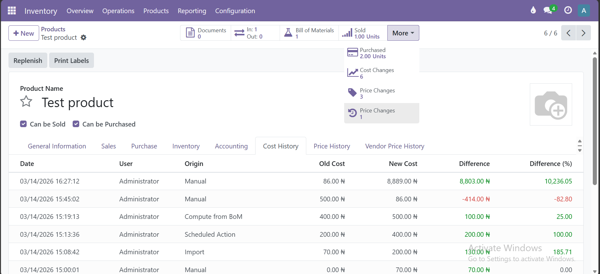
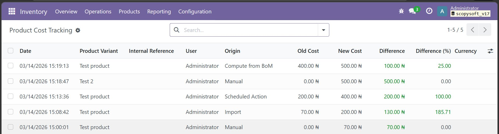
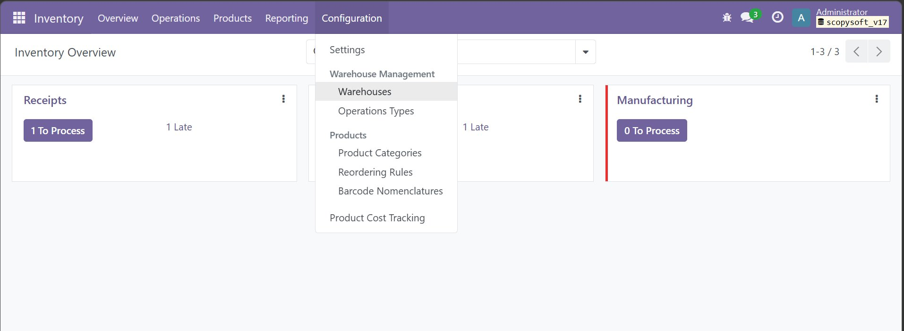
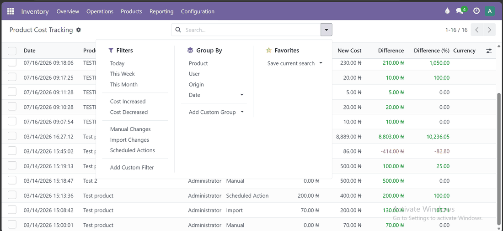
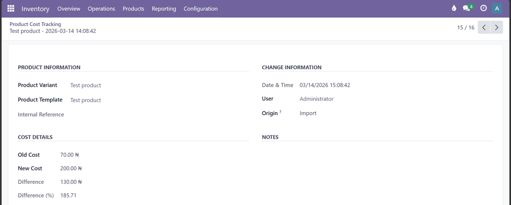

Never wonder again who changed your product cost, when they changed it, or why. A complete, automatic audit trail, built right into Odoo.
What You Get
Install once, and every future cost change is automatically captured with full context - no extra setup required.
Every change to the cost field is recorded automatically, including old value, new value, timestamp, and the user who made the change.
Automatically identifies where the change came from - manual entry, imports, scheduled actions, purchase orders, manufacturing, and more.
Instantly shows the cost difference in both absolute value and percentage, so you can immediately spot significant price movements.
Access the full cost history directly from the product form with a dedicated Cost History tab and a Cost Changes smart button.
Tracks the company context on every record. Works correctly in multi-company Odoo setups out of the box.
All tracked data is stored in standard Odoo records, meaning you can filter, group, and export cost history with built-in Odoo tools.
See It In Action

01 · Cost History tab and Cost Changes smart button, right on the product form

02 · Every recorded change, with product, user, and origin

03 · Inventory → Configuration → Product Cost Tracking - centrally accessible

04 · Built-in filters and grouping - by product, user, origin, date, cost increased or decreased

05 · Full detail on a single change - old cost, new cost, difference, user, and origin
How It Works
No configuration needed. The module hooks into Odoo's write mechanism and silently logs every cost change in the background.
01
No extra settings, no configuration wizards. It works immediately on install.
02
Any time a product's cost is updated - by a user, a scheduled action, an import, or another module - a tracking record is created.
03
A smart button appears on the product showing the total number of changes. Click it, or open the Cost History tab, to see the full history.
04
All cost tracking records are also accessible under Inventory → Configuration → Product Cost Tracking for a company-wide overview.
Data Captured
Each tracking entry is a full Odoo record with these fields, searchable, filterable, and exportable.
| Field | Description | Type |
|---|---|---|
old_cost | Cost value before the change | Float |
new_cost | Cost value after the change | Float |
cost_difference | Absolute difference (new minus old) | Float (computed) |
cost_difference_percent | Percentage change | Float (computed) |
user_id | User who triggered the change | Many2one |
origin | Source of the change (see below) | Char |
company_id | Company context at time of change | Many2one |
create_date | Exact date and time of change | Datetime |
notes | Optional manual notes field | Text |
Origin Detection
The module uses multi-level detection - context, active model, and call stack inspection - to correctly label the source of every change.
| Origin | When it appears |
|---|---|
| Manual | User typed a new cost directly in the product form |
| Import | Cost updated via CSV or Excel file import |
| Scheduled Action | A cron job or server action changed the cost |
| Button Action | A button click triggered the cost update, including validating a Purchase Order receipt |
| Mass Update | Multiple products updated in one operation |
| Purchase Module | Cost updated automatically by the purchase module in the background without user interaction |
| Manufacturing Order | Cost updated during production |
| Inventory Module | Cost updated via inventory valuation |
| Compute from BoM | Cost recalculated from Bill of Materials |
| Initial Cost | Cost set when the product was first created |
| Automated Process | Non-web background process |
| Custom Origin | Set explicitly by another module via a context key |
Technical
Built following Odoo best practices. No external dependencies, no overrides of core views, no data loss risk.
product.product and product.template - no core model modificationwrite() override with a duplicate-prevention context flagsudo() so no permission errors occur regardless of user rolefloat_compare with Product Price decimal precisionproduct and stock - no additional module requirementsFAQ
No. The module begins tracking from the moment it is installed. Any cost changes that happened before installation are not captured - only future changes are logged.
No. The tracking logic only runs when the cost field is part of a write operation. For all other writes to product records, there is zero overhead.
Yes. Cost history is tracked at the product variant level and linked to the parent template. You can view history from either.
The smart button only appears after at least one cost change has been recorded for that product. On a fresh install, change any product's cost and save - the button will appear immediately.
Yes. Tracking records are standard Odoo records. Users with appropriate permissions can delete individual records. We recommend restricting this via access rights in production.
Tracking records cascade-delete - if the product is deleted, its cost tracking records are automatically deleted as well.
Clicking Validate on a purchase receipt registers as a Button Action, because that's literally what happened. The important data is all captured - which product changed, the old and new cost, who did it, and when.
Built by ScopySoft · Odoo 17